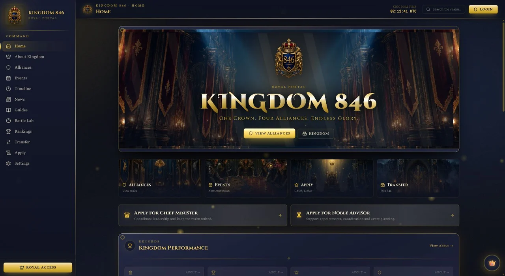

API / CDC
EVENTS / FILES
SENIOR DATA ENGINEER · RALEIGH, NC
I’m Bhanu Vejendla, a Senior Data Engineer with 7+ years of experience turning high-volume data into reliable systems across Azure, AWS and GCP.
A good data platform should be reliable today and understandable six months from now.
My work has taken me across insurance, gaming, financial services and healthcare. I’ve built pipelines that ingest, process and organize data for analytics, reporting and downstream applications.
I focus on the work that keeps a platform useful after launch: data quality, failure recovery, monitoring, security, performance and cost. I also build reusable patterns so other engineers can deliver and support pipelines more consistently.
Each role has strengthened a different part of my data engineering experience.
Reusable ingestion patterns and reliable reporting datasets.
90% less infrastructure management time through Terraform automation.
Curated BigQuery datasets and visibility into platform costs.
Batch and streaming pipelines with built-in quality checks.
Grouped by where they fit in the work, from ingestion through production delivery.
 Python / PySpark
Python / PySpark
 SQL
Databricks
SQL
Databricks
 Azure Data Factory
Kafka
Snowflake
Azure Data Factory
Kafka
Snowflake
 Airflow
Airflow
The tools I focus on for ingestion, processing, orchestration and analytics.
Reliable movement from source to platform.
Airflow
Azure Data Factory
APIs & Postman
Apache NiFi
 AWS Glue
AWS Glue
 Cloud Dataflow
Apache Beam
Cloud Dataflow
Apache Beam
 Java Message Service
Java Message Service
Batch and streaming transformations at scale.
Python & PySpark
dbt
SQL
 Hadoop
Apache Storm
Dataproc
Java
Hadoop
Apache Storm
Dataproc
Java
Governed storage and analytics-ready models.
ADLS
Amazon S3
BigQuery
Delta Lake
Apache Parquet
PostgreSQL
Azure Blob Storage
Azure Synapse
Azure SQL Warehouse
Amazon Redshift
DynamoDB
 Elasticsearch
SnowSQL
Elasticsearch
SnowSQL
Repeatable infrastructure and production delivery.
Microsoft Azure
AWS
Google Cloud
 Terraform
Terraform
 Docker
Docker
 Kubernetes
Kubernetes
 GitHub Actions
GitHub Actions
 Jenkins
Jenkins
 Git
Git
 Grafana
Kibana
AWS Lambda
Cloud Monitoring
Looker Studio
Docker Swarm
Grafana
Kibana
AWS Lambda
Cloud Monitoring
Looker Studio
Docker Swarm
Idempotent pipelines · Data contracts · Automated testing · Checkpointing · Backfills · Lineage · Monitoring · Secure access
The tools change by platform. The engineering discipline stays consistent.
Illustrated workflow showing my delivery process.
Volume, latency, ownership and failure modes.
Schemas, quality rules, SLAs and access.
Replayable batch or streaming ingestion.
Tested, incremental and scalable processing.
Governed tables and analytics-ready products.
Monitoring, recovery, performance and cost.
Five projects showing production ownership, practical architecture and reliability—from a live community platform to data engineering systems.
Choose a project to review the problem, engineering decisions and supporting evidence. Each case study links to the live site or source repository.

A gaming community needed one dependable place for alliance information, live rosters, applications, rankings, voting and operational updates. I built Kingdom846 as a responsive platform used by real community members.
I separated the React interface from an Express API, persisted operational data in SQLite and enforced role boundaries for administrators, alliance leaders and War Room users. Rate-limited authentication, version-aware updates and a server-side Royal Advisor make the platform practical to operate.
Building a team around batch pipelines, streaming systems or cloud data platforms? Share the role, location and the engineering challenges you’re working on.